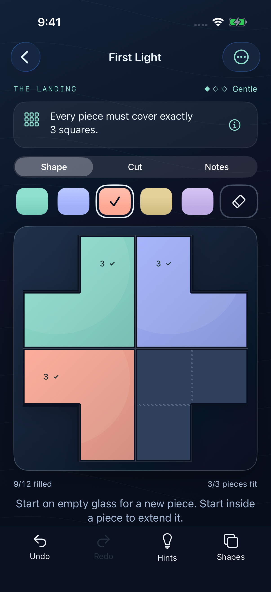
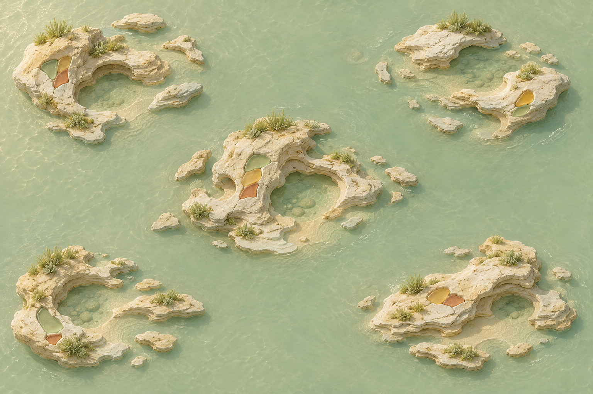

An independent puzzle game · Now on iPhone
Logic, in a
different light.
Draw a boundary. Find a shape.
Bring a quiet island back to
light.
Free on the U.S. App Store. iOS 17 or later.
No ads,
subscriptions or paid hints.

A simple idea, many possibilities
Every piece
has its place.
Divide the glass into connected pieces. A number might tell you how large a piece should be. A sun may need a moon. Neighbors might need different outlines. The rules change; the pleasure is finding how they fit.
The island
A shore worth
coming back to.
Explore 1,000 original puzzles across 25 shores, with hidden mosaics and two bonus areas. Each solved puzzle restores a little more of its area's mosaic. Stay for the extra challenge, or follow the light to the next shore.

Room to experiment.
Undo, redo, restart, and pencil notes keep your thinking flexible. Your progress belongs to you.
Help without pressure.
Check your progress, explore a possible piece, or look at an example. Hints are free. No clock is counting down.
Color is yours.
Choose a palette that feels right. Sizes, outlines and symbols carry the logic; color never decides the answer.
A note from the developer
Something small.
Made with care.
Isle of Glass began with a simple wish: a puzzle that gives you space to think, and a place you want to return to.
The game brings together 1,000 puzzles, a workshop for your own designs, and a little room for another idea. The whole campaign and every hint are free, so you can take your time and follow the clues at your own pace.
Thanks for looking around. If something catches your eye—or doesn't quite work—I’d like to hear about it.
Share feedback on GitHubAli Haroon
A few things to know
Where can I play?
Download Isle of Glass from the U.S. App Store. The game is free for iPhone with iOS 17 or later. The initial release is available in the United States.
Is the game free?
Yes. The full campaign and every hint are free. There are no ads, subscriptions, in-app purchases or paid hints.
Can I make my own puzzles?
The local Workshop lets you create a puzzle and exchange structured puzzle files. Optional community sharing lets you submit designs for review, download approved mosaics, and report or block creators.
Does the game need an account?
The campaign works offline without an account. Publishing uses an optional generated community profile. Creator blocking works locally and also syncs when you use a profile. You can delete that profile and its submissions from the app. Private support has separate deletion controls.